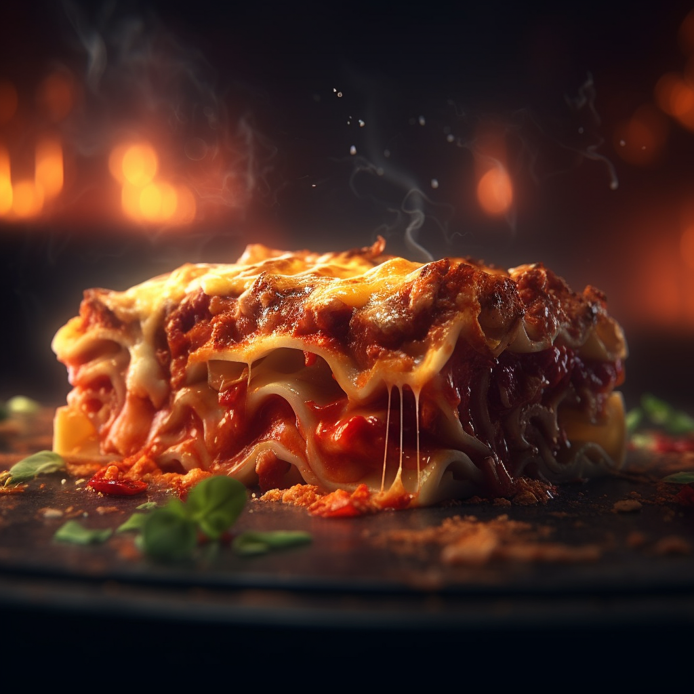

Lasagna
Description
lasagna is an Italian dish made of stacked layers of thin flat pasta alternating with fillings such as ragù, vegetables, and cheese, and seasonings such as garlic, oregano, and basil. It is made with a flat noodle, such as lasagna, or with sheets of pasta cut into squares or rectangles. The dish is popular in many countries, and is commonly made with a meat-based ragù, but can also be made with vegetables, seafood, or cheese. It is often topped with melted cheese, such as mozzarella, parmesan, or a mixture of the two.
Ingredients
- Lasagna noodles.
- Ground beef and or italian sausage.
- Tomato sauce.
- Ricotta cheese.
- Shredded Mozzarella cheese.
- Grated parmesan cheese.
- Chopped onions.
- Minced garlic.
- Olive oil.
- Salt and pepper.
- Fresh basil (optional)
- Red pepper flakes (optional)
Steps
- Preheat oven to 350 degrees F (175 degrees C).
- Cook the lasagna noodles according to package instructions until they are al dente (firm to the bite), then drain and set aside.
- In a large skillet, heat some olive oil over medium-high heat. Add the chopped onions and minced garlic and cook until they are soft and fragrant.
- Add the ground beef and or italian sausage to the skillet and cook util browned, breaking it up into small pieces with a wooden spoon or spatula.
- Add the tomato sauce and stir to combine. Reduce the heat to medium-low and pinch of salt and pepper.
- In a separate bowl, mix together the ricotta cheese, parmesan cheese, and pinch of salt and pepper.
- To assemble the lasagna, spread a layer of the meat sauce in the bottom of a 9x13 inch baking dish. Add a layer of lasagna noodles on top, then spread a layer of the ricotta cheese mixture over the noodles. Sprinkle some shredded mozzarella cheese on top. Repeat this layering process until you have used up all your of ingredients, ending with a layer of the meat sauce and a generous sprinkling of shredded mozzarella cheese on top.
- Cover the baking dish with foil and bake for 25-30 minutes. Remove the foil and bake for 25-30 minutes. Remove the foil and bake for an additional 10-15 minutes, or until the cheese is melted and bubbly and the lasagna is heated through.
- Let the lasagna cool for a few minutes before slicing and serving. Top with some chopped fresh basil and red pepper flakes, if desired.